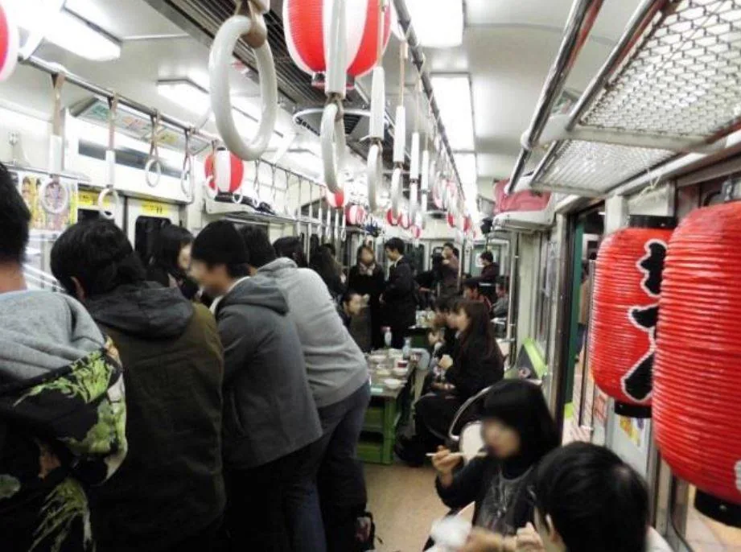
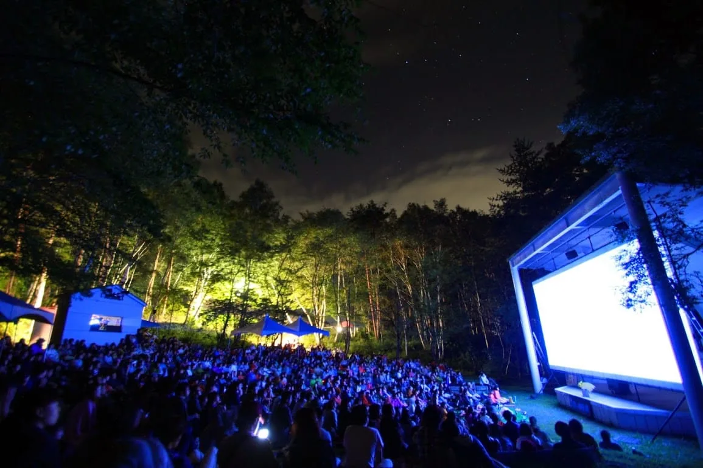

公共空間活動怎麼「辦」 讀《街頭設計》
捨棄了個人式的讀後心得，本文更像是書籍簡介，並整理了案例的網站連結。
這幾天讀《街頭設計：改變街道的七種方式》，多次要向友人提起內容時總是記不得書名，藉由Google大神直譯原書名為《如何創造新的「街道」─來自戶外公共空間應用實踐者的Know-How》，街頭／街道(street)其實並沒有那麼涵蓋所有案例（特別第一個案例是星空電影節時），不過看到「戶外公共空間應用」時就相對能連結了～
這本書以7個戶外空間應用的案例集結而成，分別是
- 在大自然中看電影《星空電影節》
- 在公園辦婚禮 《Happy Outdoor Wedding》
- 車站入夜變身酒吧《京阪電車中之島站－月臺酒吧》
- 用走讀形式觀光 《漫漫京都》
- 結合地方慶典 《戶外音樂節》
- 河岸邊再活用 《京都河川沿岸、愛之殿橋路臺》
- 香港各種路上活動《藝術中心、路上酒吧、游擊種植》

既然是Know-How傳授，《街頭設計》提到的案例不只是要呈現案例的成就或是活動多創新、多有趣，更重要的是實務面所碰到的困難以及如何克服（場地使用的可行性、與公部門的溝通、人力或資源的缺乏、與地方居民的串聯…），也能看到活動設計的獨創性與巧思。
案例基本上順著脈絡陳述，先說明地方的背景和現況、造成發展停滯、困難的原因等，接著隨著計劃的初步設定，和不同的單位討論，呈現每個階段所碰到的困難和解方，最後也記錄了活動的成果以及參與民眾的回饋等。書末也有行政手續、在台灣相對應的法規等供參考，部分是以日本法規為主，但仍很值得以此思考國內可能需要注意的地方、負責的單位和法規等。

《あたらしい「路上」のつくり方─実践者に聞く屋外公共空間の活用ノウハウ》是於2018年出版，案例大概發生於2015-2017年間，有些活動每年仍持續舉辦，看得懂日文的大家可以直接連結過去瞧瞧現在進行式：（本人亦不懂日文，推薦大家右鍵Google翻譯XD）
星空の映画祭
官網：https://www.hoshizoraeiga.com/
臉書：https://www.facebook.com/hoshizoraeiga/
推特：https://twitter.com/hoshizoraeiga
Happy Outdoor Wedding
官網：http://happy-outdoor-wedding.com/
臉書：https://www.facebook.com/HappyOutdoorWedding
京阪電車 ホーム酒場
官網（京阪電車）：https://www.keihan.co.jp/
2018年活動資訊（pdf）
推特關鍵字搜尋"ホーム酒場"
まいまい京都
官網：https://www.maimai-kyoto.jp/
臉書：https://ja-jp.facebook.com/mmkyoto/
推特：https://twitter.com/maimai_kyoto
橋の下世界音楽祭 SOUL BEAT ZERO
官網：https://soulbeatasia.com/
臉書：https://www.facebook.com/soulbeat/
（2020年可能擴大辦理了？改成叫SOUL BEAT ASIA）
Erection-Block Party-
臉書：https://www.facebook.com/Erec.tyo/
推特：https://twitter.com/Erection_info
愛知・殿橋テラス
文〈“合法”的游擊式空間利用──愛知縣岡崎市“殿橋露臺”的實踐〉
香港－「活化廳」
臉書：https://www.facebook.com/wooferten
香港－街坊排檔
臉書：https://www.facebook.com/kaifongpaidong
留言
電子郵件不會公開，只用來辨識留言者。第一次留言會先經過審核，之後同一個電子郵件的留言會直接顯示。本留言區以 Cloudflare Turnstile 防止垃圾留言。